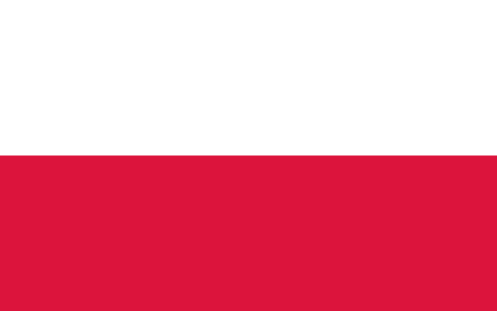
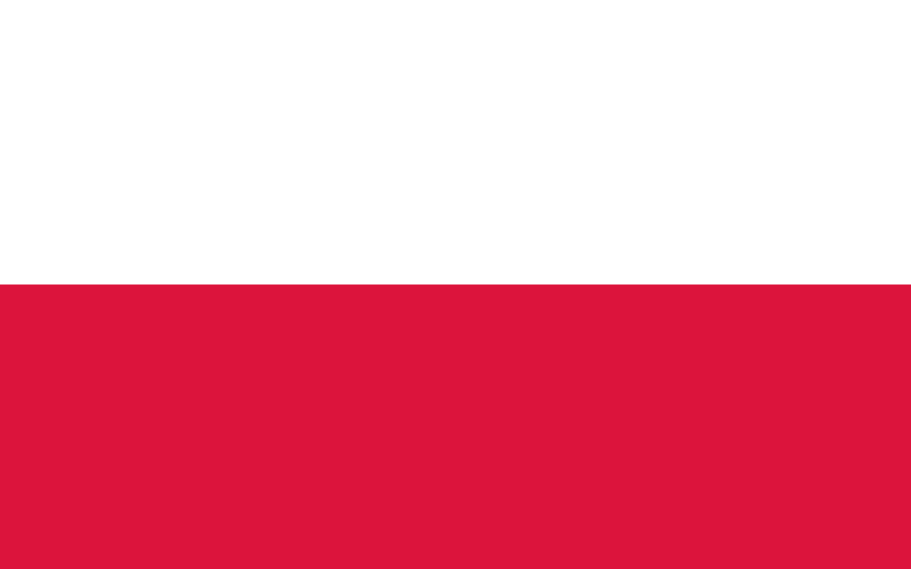
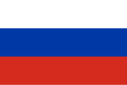
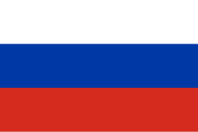
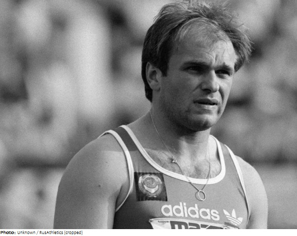
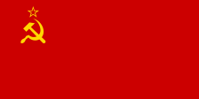

Atléták részletes adatlapja
1. Paweł Fajdek
 

Legjobb eredmény: 83.93 m
Születési dátum: 1989. június 4.
Versenyek:
- Olimpiai bronz: 2020
- Világbajnoki arany: 2015, 2017
- Európa-bajnoki arany: 2016
2. Szergej Nyikolajevics Litvinov
 

Legjobb eredmény: 86.04 m
Születési dátum: 1960. április 15.
Versenyek:
- Olimpiai arany: 1988 (Szöul)
- Világbajnoki arany: 1987
- Európa-bajnoki arany: 1986
3. Yuriy Sedykh


Legjobb eredmény: 86.74 m
Születési dátum: 1955. június 11.
Versenyek:
- Olimpiai arany: 1976, 1980
- Világbajnoki arany: 1983, 1987
- Világrekord: 86.74 m (1986)